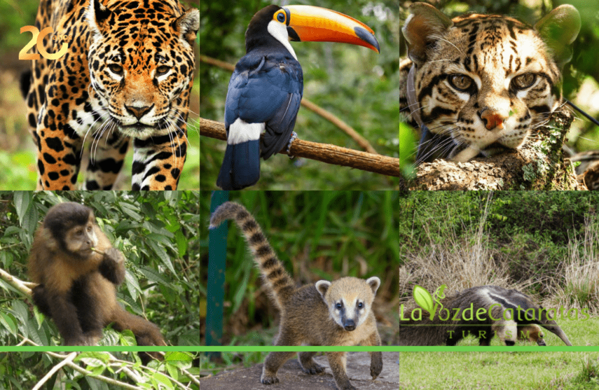

¿Dónde se ubica?
Al norte de la provincia de Misiones, en el límite con Brasil, se encuentran las majestuosas Cataratas del Iguazú: una de las Siete Maravillas Naturales del Mundo y, sin dudas, uno de los lugares más espectaculares de Latinoamérica.
Están totalmente insertadas en áreas protegidas; el sector de la Argentina se encuentra dentro del parque nacional Iguazú, mientras que el de Brasil se encuentra en el "Parque Nacional do Iguaçu", en el Estado de Paraná. Se encuentran próximas a la frontera entre Paraguay y Argentina
Tanto su ubicación en medio de la selva como su descomunal volumen de agua y numerosos saltos las convierten en un sitio inolvidable y de obligada visita en todo viaje a Argentina

Algunos Datos...
Están conformadas por 275 saltos de agua que caen desde las más diversas alturas. La más alta, de 80 metros, es conocida como la Garganta del Diablo.
Un contexto vegetal inigualable enmarca a uno de los paisajes naturales más opulentos del mundo... Se trata de más de 2 km de cascadas que superan los 70 metros de altura, una manifestación espectacular de uno de los recursos cada vez más escasos del planeta: El agua .
El Parque Nacional Iguazú es un área protegida que conserva uno de los sitios de mayor riqueza biológica de la Argentina.
Este ambiente es conocido popularmente con el nombre de Selva Misionera. Aquí se encuentra la mitad de las especies de aves registradas en el territorio argentino y la mayor diversidad de orquídeas del país.
La fauna que existe en las cataratas de Iguazú está compuesta por 450 especies de aves, 80 especies de mamíferos, gran variedad de insectos y dentro de la fauna fluvial podemos encontrar yacarés, tortugas, garzas y peces.
Los vencejos de cascada son la especie representativa de las cascadas de Iguazú; también se encuentra el tucán grande, que es uno de los cinco tipos de tucanes que existen en la zona.
Las cascadas representan un refugio para algunos animales que se encuentran en peligro de extinción, como el yaguar, tapir, ocelote, tiricas, oso hormiguero, la yacutinga, águilas selváticas, el yacaré overo, etc.
A las Cataratas se las puede conocer, básicamente, a través de dos circuitos: uno inferior y otro superior. Desde el inferior se llega a la base de los saltos, donde la fuerza del agua se transforma en rocío o vapor que moja a los concurrentes. La experiencia es única y vale la pena animarse a la aventura. Desde este circuito también se puede tomar un bote con destino a la isla San Martín.
